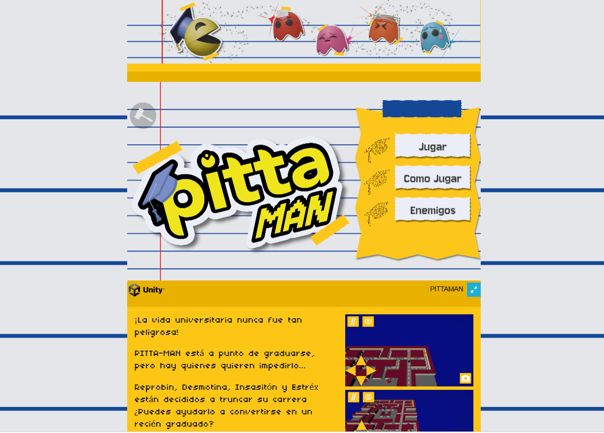
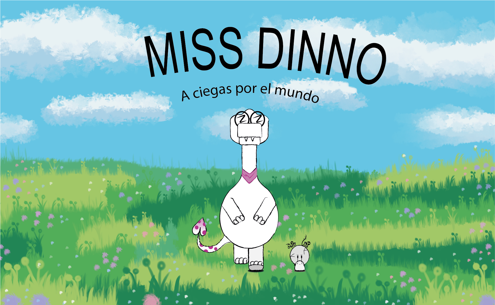
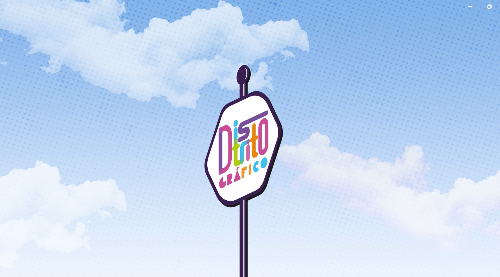
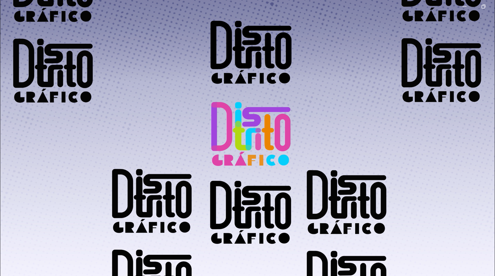
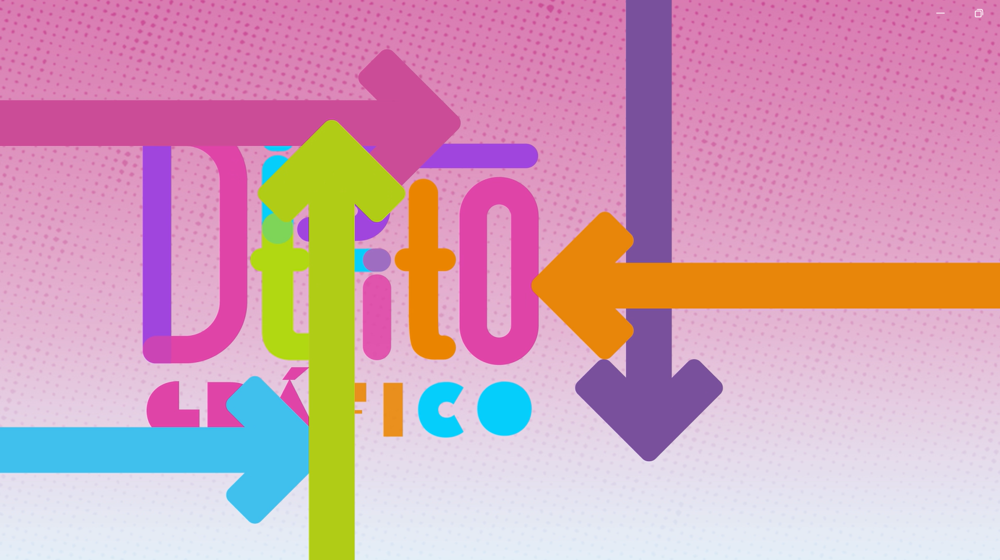
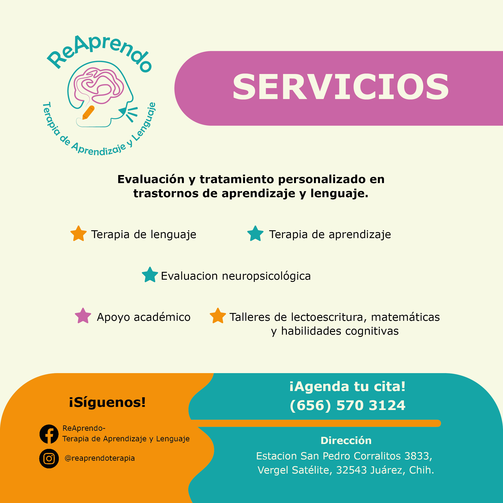
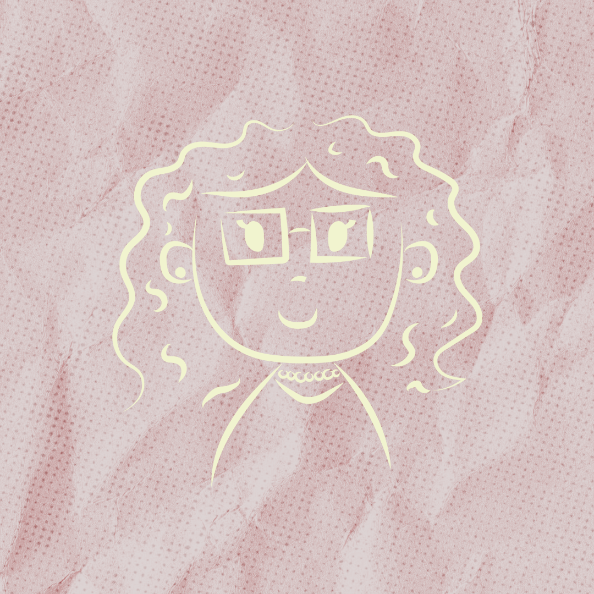

Portafolio
web
Janeth Castañeda
Mi trabajo


Despacho de prácticas educativas profesionales y emprendimiento del IADA
Desarrollo frontend de la página web oficial para el despecho de practicas profesionales, para empleadores y alumnos.
Recursos: html, css y js


VESTIGIOS: Cuerpos, Ausencias y Permanencias
Desarrollo forntend de una página de registro para una rifa para la primer gran gala del programa Diseño y Gestión de la Moda.
Recursos: html, css y js
Enlace


PITTA-MAN
Rediseño de la identidad visual, diseño de personajes y desarrollo de escenario del videojuego PTTA-MAN, para el Programa Integral de Tutorías y Trayectorias Académicas (PITTA).
Recursos: Ilustrador y Blender
Enlace
.png)
.png)
.png)
.png)
Miss Dinno
Diseño de la identidad gráfica, personajes, escenarios y jugabilidad del videojuego Miss Dinno, una creación personal entregada como trabajo final universitario.
Recursos: Ilustrador y Photoshop
Enlace


Distrito Gráfico
Diseño de visuales en loop, destinados a usarse de apoyo para las conferencias presentadas en el evento Distrito Gráfico, organizado por el Programa De Diseño Gráfico.
Recursos: Photoshop, Ilustrador y After effects
Enlace
.png)
.png)

ReAprendo - Terapia de Aprendizaje y Lenguaje
Diseño de anuncios publicitarios y capsulas informativas para las redes sociales del emprendimiento ReAprendo - Terapia de Aprendizaje y Lenguaje.
Recursos: Ilustrador


Club de Astronomía UACJ
Diseño y desarrollo de una propuesta de rebranding para el club de astronomía de la Universidad Autónoma de Ciudad Juárez
Recursos: Ilustrador


Animación 3D
Desarrollo de una animación 3D de un fragmento de la película High School Musical 3, entregado cono proyecto final universitario.
Recursos: Maya, Blender y Premier Pro
Enlace


Animación 2D
Desarrollo de una animación en 2D del sketch Fantasmas y Jueguitos, una creación personal entregada como proyecto final universitario.
Recursos: Ilustrador y After Effects
Enlace
Hola!
Soy Janeth
Estudiante de último año en la carrera Diseño Digital de Medios Interactivos, con experiencia en el diseño de branding y recursos gráficos para redes sociales, presentaciones y material imprimible. Con amplio interés en el diseño web, el modelado 3D y la animación, con el objetivo de expandir mis conocimientos para un desarrollo profesional.
.png)